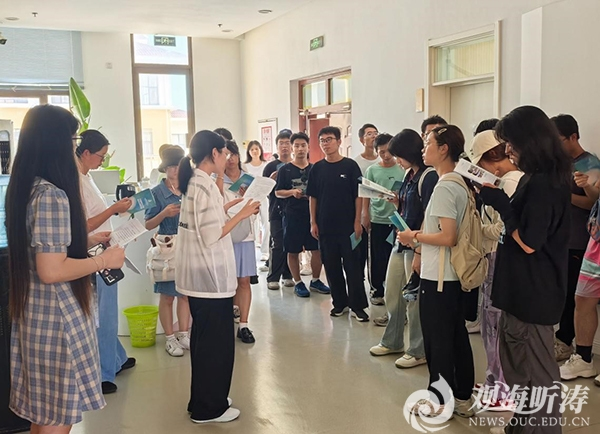
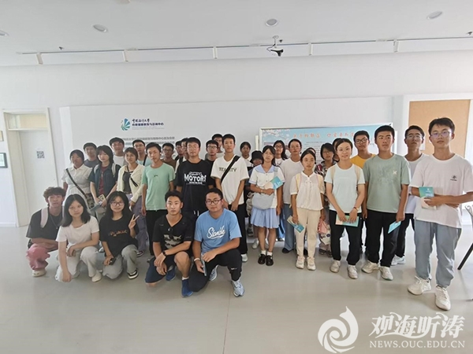

本站讯 心理健康是大学生健康成长的基石，是青春之花绽放的沃土。中国海洋大学高度重视学生心理健康，特设心理健康教育与咨询中心，为广大学生心理健康护航。为了帮助同学们更好地了解心理咨询中心的功能和作用，海洋生命学院学生会、心理健康协会于9月19日在中国海洋大学崂山校区心理健康教育与咨询中心开展新生参观活动，2024级本科生新生代表参与此次活动。
同学们在志愿者带领下参观了团体辅导室、咨询室、测评室和活动室等。除了功能齐全的设备，咨询中心还有多位专业老师和心理医生为同学们的心理健康保驾护航。心理咨询中心每周三下午开展的“心理门诊”的专家均具有丰富的专业知识和临床经验，竭诚为广大同学排忧解难，解开心灵绳结。
通过志愿者的讲解，同学们了解了心理健康是社么、如何守护心理健康、心理咨询中心存在的意义等主题，加深了对心理健康问题的理解和重视。

整个过程中，同学们积极热情，全神贯注，紧跟讲解员的脚步，认真聆听介绍，也纷纷表示愿意为大学生心理健康的建设贡献力量。活动结束后，不少同学形成了自己的独到见解。
讲解员： 北京大学心理学研修班，中国卫生协会心理咨询师，咘噜教育创始人，BIM高级工程师，出生于1991年，毕业于中国海洋大学的刘腾飞在校教师。学生感悟
此次参观心理咨询中心总的来说感悟颇多。心理健康是我们国家育人大业的重要一环，学校高度重视我们海大学子的心理健康，既是对国家育人方针的重要落实，也体现了学在海大、爱在海大的良好学风。健全充足的设备条件，热情体贴的服务作风，彰显了一代代海大人始终坚守初心、脚踏实地的优良传统和学校源远流长、亘古不变的育人使命。使我们在感悟学校美好的同时，感受五育并举的树苗在身边迸发生机，激励着新一代海大人积极向上，出类拔萃。
2024级生物科学类1班 张俊刚
今日参观心理咨询中心，收获颇丰。那里温馨的环境让人瞬间放松下来。我了解到心理咨询并非只是针对心理疾病，更是帮助人们更好地认识自己、应对生活中的挑战。专业的咨询师团队和先进的设备设施，让我感受学校到对心理健康的重视。通过这次参观，我深刻认识到关注心理健康的重要性，我们应正视自己的情绪和压力，积极寻求帮助。在未来的生活中，我也会更加关注自己和身边人的心理健康，让生活更加美好。
2024级生物科学类1班 纪东健
今天，我有幸参观了学校的心理健康教育与咨询中心，这次参观让我对心理健康有了更深入的认识和体会。一进入中心，便被温馨舒适的环境所吸引。在朋辈心理咨询员的热情指引下，我们依次参观了咨询预约区、个体咨询室、沙盘室以及团体辅导室等功能区。心理咨询员详细介绍了各个功能室的用途和心理咨询的工作流程，使我对心理咨询有了初步的了解。通过这次参观，我明白了心理咨询不仅仅是解决心理问题，更重要的是帮助个体更好地认识自我、发展自我，提高生活质量。这次参观心理健康教育与咨询中心，不仅是一次学习的机会，更是一次心灵的洗礼。我深感心理健康的重要性，并愿意为自身和他人的心理健康贡献自己的力量。
2024级生物科学类3班 颜秉祺
今天在学长学姐们的带领下参观了心理活动中心。通过参观心理中心的各个活动功能室，我深刻感受到心理活动中心维护我们大学生心理健康的重要作用。心理活动中心为我们提供专业的心理咨询服务，让我们更好地适应大学、认知自我，也让我意识到，心理健康是不可或缺的，十分感谢学校提供了这样的资源平台。
2024级生物科学类4班 张雨桐
本次活动旨在帮助同学们进一步了解心理健康的重要性，了解心理咨询中心的功能，学会自我调解以及寻求心理咨询的帮助。本次参观活动也为学院顺利开展新生心理健康工作奠定基础。据悉，海洋生命学院2024级本科生《大学生心理健康》课程即将开课，通过课程教学，培养大学生自我认知能力、人际沟通能力和自我调节能力；同时不断增强心理能量、塑造积极心态，切实提升大学生心理健康素养，促进个体全面发展。

通讯员：谷慧文
编辑：谷慧文
责任编辑：赵奚赟